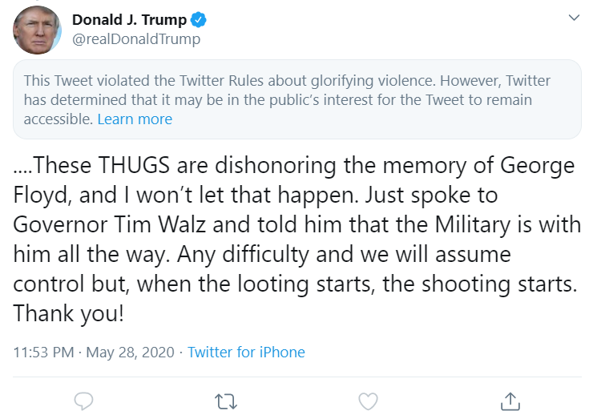

The United States is in a state of tumult. Not only are we facing the looming threat of the second wave of disease or the fact that black individuals can still not feel safe in their daily lives, we are being berated with fake news, and claims of fake news, that make these aforementioned issues much harder to understand. Yesterday, May 28, President Trump signed an executive order limiting the ability for social networks, in particular twitter, from fact-checking his tweets and “limiting free speech.” This came in response to a few of his tweets, regarding mail-in voting, being marked as misleading. While I am no expert in free speech or its implications, I am a firm believer in its power in political discourse and intellectual growth. Free speech is necessary for progress. Saying this, the basis of free speech is to block against a government controlling the media or individuals’ rights to voice their opinions. Not a large tech companies’ ability to fact check and label content on their platform. Trump is attacking these media companies for limiting free speech by limiting their free speech. It is paradoxical is the truest form. It causes mass polarization and becomes a divisive political issue when the sole purpose was to try and provide some sort of truth online. Fact-checkers are inherently good, they help stop the spread of malicious and faulty claims that spread so easily online, and this should not stop because the President of the United States happens to be in this group of faulty tweeters. I would recommend reading the executive order if you are interested in its implications and it can be found here.
 Here is a disgusting tweet that was flagged for glorifying violence by Twitter. Note that the tweet was not removed.Throughout his stay as the President, the words “Fake News” have been uttered out of his mouth or keyboard more times than I have heard in my entire, short life. While all news is not real by any means, creating distrust in every large, somewhat left-leaning news agency by calling their publication “fake” is the sole thing you are trying to combat with your executive order. Trump claims that fact-checkers are covert, liberal agents that are designed to suppress conservative views. While this is not overtly true, the peddling of false information has happened on both the right and left side of things. But here we are, attacking the left for creating fake news, creating distrust in their platforms, and subsequently limiting their free speech while claiming the left is limiting your free speech by attributing a label to your misleading tweets. It is a back and forth that I just cannot help but laugh at. I said it before, but it is paradoxical, he is trying to destroy another entity for doing the same thing he does on an almost daily basis.
So, where does that leave us? How can we move forward, educate ourselves on the issues of our time, and figure out what is going on in the world? Well, with simplicity and a bit of effort, you cannot treat headlines from any source, regardless of its orientation, as an absolute. There are always two or more sides to an issue, always pieces that are left out of articles and headlines to further an agenda, and it is your job as an individual and citizen to put the pieces together. Read articles from both sides, find the similarities, do some research, and build a complete story of events that way. You can have your opinions and dispositions but that should not influence how you get your information. Your information needs to be objective and from there you can take a side, or do not!
As the election moves closer by the day, it is imperative that the people know the reality of the situation that we are in. Unfortunately, our large media platforms tend to lean one way or the other so take it with a grain of salt. Research issues that are important to you and exercise your right to vote. Contact your representatives with ideas of actionable change, donate to causes that advance the rights of minority populations, protest discrimination and racism, and work to realize the inequities in our society. It starts with you, so do your best to be an informed, good person.